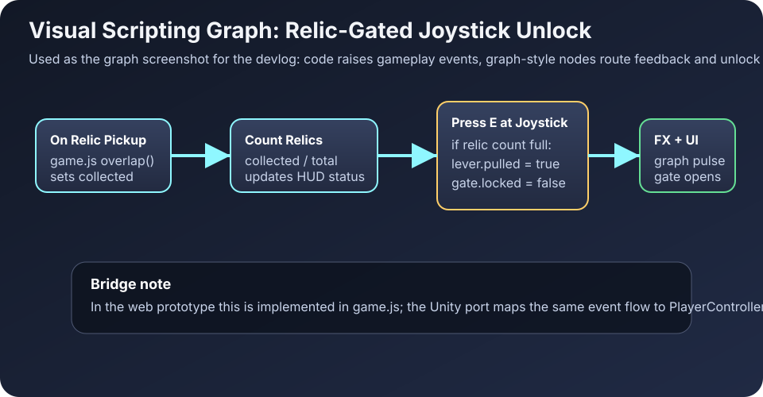

Vertical Slice – Polished Prototype
Controls: A/D or ←/→ move, Space jump, Shift ground dash, E interact, R reset.
Collect relics, pull joystick, then open each gate.
Visual scripting bridge (outside the game view)
Gameplay stays clean: the canvas only shows tutorial prompts. The graph documentation lives here and in the devlog.
